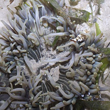
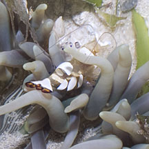
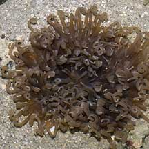
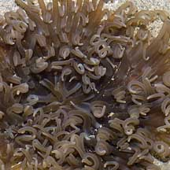
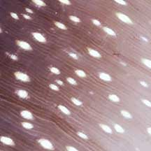

|
|
| sea anemones text index | photo index |
| Phylum Cnidaria > Class Anthozoa > Subclass Zoantharia/Hexacorallia > Order Actiniaria |
| Snaky
anemone Heteractis doreensis Family Actiniidae updated Dec 2024 Where seen? This large anemone has long snaky tentacles that resemble udon noodles. It is sometimes seen on some of our shores, on coral rubble and near seagrasses and reefs. Although generally only exposed at the lowest tides, it is said that the anemone is generally found no deeper than 5m. In 2023, it has been reassigned from Macrodactyla to Heteractis doreensis. Features: Diameter with tentacles extended said to reach up to 50cm but those seen usually smaller about 20-30cm. Tentacles snaky, thick and long (about 10cm). Sometimes (not always), the tentacles may be tightly coiled or curled especially when the anemone is submerged. It is also called the Corkscrew Tentacle anemone for this reason. To some (hungry) visitors, the anemone reminds them of a bowl of udon noodles! The tentacles are close to one another at the circumference of the oral disk, and more sparsely distributed on the oral disk. Sometimes, a broad expanse in the centre of the oral disk around the mouth has no tentacles. There are white stripes radiating from the central mouth. The stripes may extend onto the tentacles. Tentacles and oral disk usually the same colour. Tentacles may be brown, green or purplish, but tips may be darker or lighter. The oral disk is purplish-gray to brown, sometimes with a greenish cast. The underside of the oral disk is purplish with white eye-shaped non-adhesive verrucae that extend onto the white body column. Sometimes confused with other large sea anemones and similar large cnidarians. Here's more on how to tell apart large sea anemones with long tentacles and large 'hairy' cnidarians. Snaky friends: The anemone harbours symbiotic single-celled algae (called zooxanthellae). The algae undergo photosynthesis to produce food from sunlight. The food produced is shared with the anemone, which in return provides the algae with shelter and minerals. The zooxanthellae are believed to give tentacles their brown or greenish tinge. Several kinds of animals have been associated with snaky anemones including anemone shrimps (Periclimenes sp.) and anemonefishes (Amphiprion sp.) including A. biaculeatus, A. clarkii (juvenile and adult), A. percula, A. perideraion, A. polymnus (juvenile and adult). But these are rarely observed on the Snaky anemones seen on the intertidal during low tide. Human uses: Unfortunately, these beautiful animals are harvested from the wild for the live aquarium trade, although they are difficult to maintain in captivity. Status and threats: As at 2024, it is listed as Endangered in Singapore. |
 Beting Bronok, Aug 05 |
 White stripes radiating from the centre. |
 White eyed-shaped verrucae. |
|
 Cyrene Reef, Jun 12  With Peacock-tail anemone shrimp (Periclimenes brevicarpalis) |
 Cyrene Reef, Mar 07  Tentacles in tight curls. |
 Beting Bronok, Aug 05  Body column purplish on the upper portion and white on the lower. |
| Snaky anemones on Singapore shores |
On wildsingapore
flickr
|
| Other sightings on Singapore shores |
Links
|